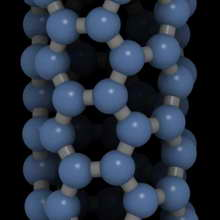

Nanotechnology
Introduction to Nanotechnology
|
|
 |
But its not all research and good ideas. Numerous products are already the result of nanotechnology, from battery boosters in mobile phones to tennis racquets, from indoor air purifiers to self-cleaning glass. In fact, there is not a single industry that is either now (2005) or eventually wont be dramatically changed by nanotechnological applications. In addition to tennis raquets, many of the newest nano-based products are in sports: long-lasting nanoparticle tennis balls, footwarmers, athlete skin care and ski wax, to name a few.
Understanding nanotechnology and nanoscience means learning how to think small very small. This paradigm is a 180-degree turnaround from a world that up until now was built on thinking big. In the battle of the telescope versus the microscope, the stars always win out over the atoms. Afterall, we can see the stars with our own eyes. It takes tremendous imagination to see what something might look like at the molecular level.
Well, nanotechnology takes place at the atomic, molecular or macromolecular levels, in the length scale of approximately 1-100 nanometer range. A nanometer is one-billionth of a meter. Forget your average lab microscope. Molecules consist of one or more atoms. So, how big is an atom? To get us there, our imaginations can start with one cubic inch of air, which consists of an estimated 500 billion billion molecules. Did that help? You can see a cubic inch of air, right? Yeah, right.
Actually, a nano isnt the smallest thing on the planet or in space. Electrons and the family of protons, neurons, quarks and neutrinos are so small that some scientists say size is not a property. The smallest particles known are quarks and leptons. For the most part, nanotechnological researchers are concerned with size that is less than 1/1,000 the diameter of a human hair. Finally, something we can seeha!
What nanotechnology is about is building machines at the molecular level. Machines so small they can travel through your blood stream. Since the days of D.W. Griffith, Hollywood movies have always entertained our need to be scared out of our seats with all things creepy-crawly, like an invasion of ants or spiders. Nanorobots traveling on highways just behind our eyeballs? Now thats scary.
It is precisely such fear that will hinder nanotechnological development, and for good reason. The thought of nanorobots on a search and destroy mission to see out mutated bacteria and viruses in the body is enough to make most sci-fi stories up until now look like Disney cartoons. Whats to prevent one of these nanorobots from going mad? If thats not enough, imagine these nanorobots as weapons of mass destruction. Many scientists and other socially concerned individuals are, in fact, imagining such scenarios.
Nanotechnology is the manufacturing of electronic circuits and mechanical devices at the molecular level. At the molecular level, scientists can create materials and structures atom by atom, with fundamentally new functions and characteristics. But for as small as nanotechnology might be in design, its scope dramatically affects every other field, from the biosciences to medicine, from physics to DNA manipulation.
Nanoscience is the study of effects while nanotechnology is more about fabrication.
Nanotechnology promises many new benefits in medicine. The National Cancer Institute is funding a project that uses nanotechnology to develop a targeted delivery system for anti-cancer drugs. The National Heart, Lung, and Blood Institute is funding researchers at Biomod Surfaces in Salisbury, MA, using nanofiber technology to create blood vessel replacements for vascular disease and heart bypass surgeries. The National Institute on Alcohol Abuse and Alcoholism and Howard University, Washington D.C., are creating injectable nanoparticles that control delivery and availability of naltrexone, a medication for treatment of alcoholism and other addictive disorders.
Because of its ability to operate at the same level as biological processes, Nanotechnology has the potential to significantly improve the prevention, detection, diagnosis and treatment of diseases, repair damaged tissues, and monitor electrical measurement and stimulation. The fear factor is reduced or eliminated all together since such nano-materials would not irritate or damage surrounding tissues and would simply be absorbed and/or excreted when no longer useful.
Quantum dots are semi-conducting nanocrystals that, when illuminated with ultraviolet light, emit a vast spectrum of bright colors that can be used to identify and locate cells and other biological activities. These crystals offer optical detection up to a thousand times brighter than conventional dyes used in many biological tests, such as MRIs, and render significantly more information.
Nanoscale materials are used in electronic, magnetic and optoelectronic, biomedical, pharmaceutical, cosmetic, energy, catalytic and materials applications. So far, the greatest revenue generation for nanoparticles is taking place in chemical-mechanical polishing, magnetic recording tapes, sunscreens, automotive catalyst supports, biolabeling, electroconductive coatings and optical fibers, non-volatile magnetic memory, automotive sensors, landmine detectors and solid-state compasses.
The size of computer chips can go only so far before reaching nano-level. Computers based on nanotechnology will have unimaginable storage capacities and operate at, wellat nano-speed.
Nanomaterials in dry powder form or in liquid dispersions, when combined with other materials, will improve product functionality, strengthen existing materials and change conductive properties.
Other products already available include: Step assists on vans, car bumpers, paints and coatings for eyeglasses and cars, metal-cutting tools, sunscreens, cosmetics, stain-free clothing and mattresses, dental-bonding agents, burn and wound dressings and ink products. Stronger polymers will make plastics more widely used to reinforce materials and replace metals, from the building material to the semi-conductor level. Nanostructured polymers are being used in display technologies for laptops, cell phones and digital cameras. The benefits are brighter images, lighter weight, less power consumption and wider viewing angles.
Eric Drexler popularized nanotechnology in the 1980's. At that time, he talked about building machines far smaller than a cell. His vision is now reality.
But along with the many benefits for humankind, nanotechnology also carries serious risks.
Nanofactoriesa manufacturing system capable of self-producing more manufacturing
systems is a frightening concept in the hands of terrorists. Such factories would be capable of producing weapons of mass destruction at the nano-scale, with no limit as to the number of factories building factories.
With nanotechnology, the entire contents of the Library of Congress can fit into a box the size of a sugar cube. The purpose of medical devices and nanorobots traveling through the human body is essentially a positive one of searching out and destroying clusters of cancer cells before they spread. But in the wrong hands, such nanomaterials can spread disease as easily as destroying it.
Nanoscience and nanotechnology is currently in the hands of scientists and has yet to become an issue of national debate. Who will own the patents? How will they be regulated? Will there be ramifications in terms of Haves and Have-nots? Could a nano-arms race ensue? What about a black market?
Speculation on nanofactories goes so far as small appliances being fed by chemicals, producing dozens if not hundreds of products. The machine breaks down molecules then reassembles them into virtually any product imaginable. A few dollars worth of chemicals can be converted into an unlimited number of everyday items like shoes, shovels or cell phones. Not only will such products be produced for pennies, but there will be no labor costs. As far-fetched as it might sound, the technologies that will make nanofactories a reality already exist.
Will anyone be able to own such a machine? How will this affect the global economy? In terms of peace, such technology could end poverty and disease. In the wrong hands, such devices can also produce weapons, poisons and nano-sized surveillance cameras.
How nanotechnology will influence national security, the environment, human rights and other socio-cultural issues will become a major concern in the next few years, especially with nano-based products already flooding the market (as of 2005).
^ Top ^